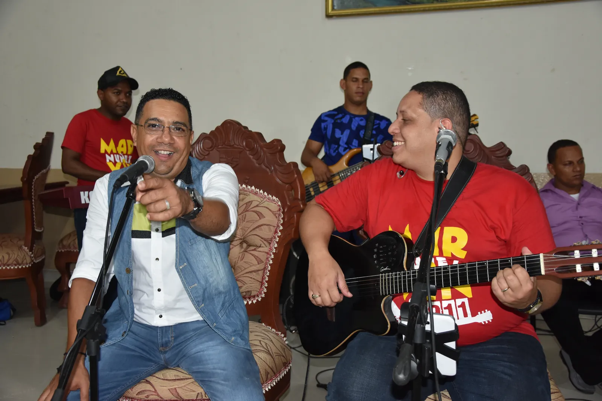
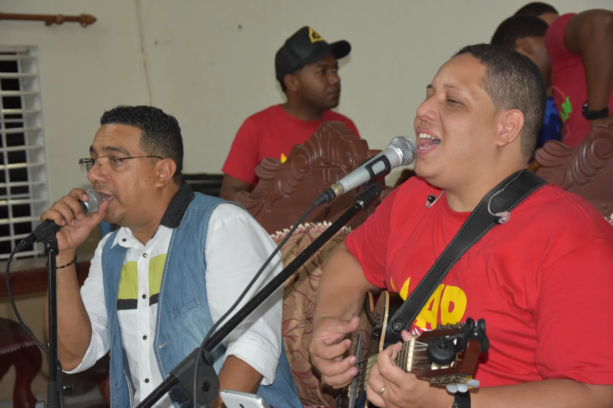
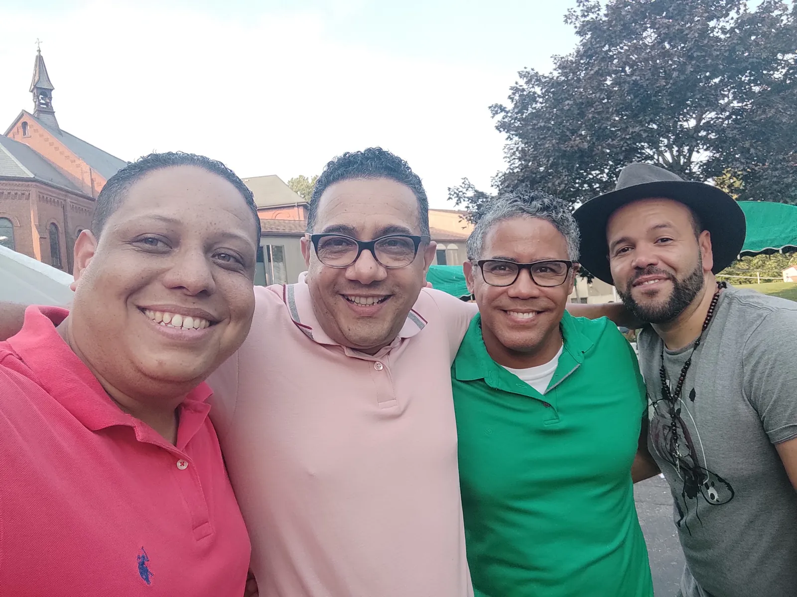
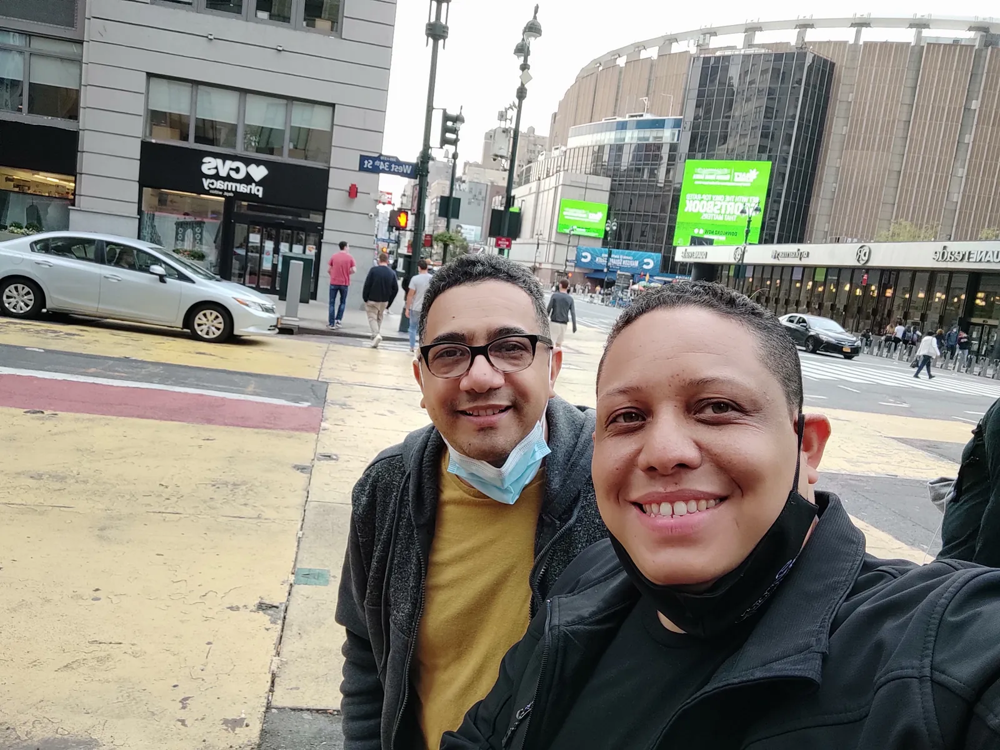

Veinte años después, la historia de cómo un evento de una sola noche
se convirtió en el camino que me trajo hasta aquí.
Twenty years later, the story of how a single night's event
became the road that brought me here.

San Juan de la Maguana, R.D. · 2017
Había una sola noche. Un evento, un favor entre amigos, y de vuelta a casa.
Así empezó lo que terminó durando veinte años.
Un solo evento
Corría el año 2004. Mi amigo Rodolfo «Rodolfito» De La Rosa,
que era el pianista del Ministerio Sabor a Cristo —el ministerio de
Junior Arias—, me llevó como guitarrista para una sola presentación.
El evento se llamaba Exaltemos, lo organizaba Jorge Morel en el
Centro Católico Carismático de Santiago de los Caballeros. Aquella noche estuvieron
Son By Four, Jon Carlo, Joan Sánchez,
Roberto Ramírez y otros más. Yo era el guitarrista prestado, el que venía por
una noche y ya.
La frase que lo cambió todo
Al terminar me acerqué a Junior para darle las gracias por dejarme participar. Pero yo sabía
algo: al día siguiente el evento se repetía en el estadio de Cotuí, en la
provincia Sánchez Ramírez. Y sin pensarlo mucho, se me salió:
¿Y para dónde vamos mañana? Porque para usted sacarme de este ministerio
le va a dar mucho trabajo.Marvin, a Junior Arias · 2004
Él se sonrió y me dijo que sí.
Con esa sonrisa quedé aceptado en el grupo. Y desde ahí empezó esta historia.
De la guitarra al micrófono
Primero fui guitarrista. Después bajista. Más adelante corista. Y poco a poco, entre ensayo
y ensayo, empezamos a arreglar las canciones que yo iba componiendo, donde ya hacía función de
solista dentro del ministerio —para que Junior pudiera descansar un momento, o irse a tocar el
bajo, que también le encanta.
Encuentro del Ministerio Sabor a Cristo · Santiago, R.D. · 2019
Cuando el alumno empieza a ser llamado
Con el tiempo la gente comenzó a invitarme por mi cuenta. Algunos incluso llamaban al propio
Junior para que me convenciera de ir a cantar a sus eventos, porque él estaba comprometido en
otro lugar esa misma fecha.
Yo estaba renuente. Salir a cantar de manera independiente no era algo que estuviera buscando.
Estaba cómodo donde estaba, sirviendo desde el lugar que me tocaba.
El empujón
Fue Junior quien me motivó a grabar mi propia producción. Y no solo me motivó: me acompañó
durante todo el proceso. Aportó ideas. Grabó coros. Permitió que los músicos del ministerio
tocaran en la grabación.
Para cerrar con broche de oro, lo invité a grabar conmigo una canción. Esa canción se
convirtió en el cierre de mi primera producción, Toca al Señor (2006) —y, sin que yo
lo supiera entonces, en el comienzo de mi vida ministerial como solista.
Es la versión en merengue de Toca al
Señor. En el pregón final se nos oye a los dos, preguntándonos quién dijo que en la iglesia
no se goza.
«Toca al Señor» (Merengue) · con Junior Arias · del álbum Toca al Señor, 2006
Veinte años después
Han pasado dos décadas desde aquella noche en Santiago. Nuestros caminos se siguen cruzando:
en conciertos, en encuentros, en una calle de Nueva York.

San Juan de la Maguana · 2017

Paterson, NJ · 2021

Nueva York · 2021
Llegué a ese ministerio a tocar por una noche. Me quedé por años. Y de esos años salió todo
lo demás: las canciones, la voz, el valor para grabar, el camino.
A veces Dios usa una puerta que parece abrirse para una sola noche, para llevarte a una casa
donde terminarás viviendo mucho tiempo. Entré preguntando para dónde íbamos mañana. Veinte años
después, todavía voy.
It was supposed to be one night. One event, a favor between friends, then
back home. That's how something that ended up lasting twenty years began.
One Single Event
It was 2004. My friend Rodolfo «Rodolfito» De La Rosa,
who was the pianist for Ministerio Sabor a Cristo — Junior
Arias's ministry — brought me along as a guitarist for a single performance.
The event was called Exaltemos, organized by Jorge Morel at the
Centro Católico Carismático in Santiago de los Caballeros. That night featured
Son By Four, Jon Carlo, Joan Sánchez,
Roberto Ramírez, and others. I was the borrowed guitarist, there for one night
and nothing more.
The Line That Changed Everything
When it ended, I went up to Junior to thank him for letting me take part. But I knew
something: the next day the event was happening again, at the stadium in Cotuí,
in Sánchez Ramírez province. And without thinking much about it, it slipped out:
So where are we going tomorrow? Because getting rid of me from this ministry
is going to take you some work.Marvin, to Junior Arias · 2004
He smiled and said yes.
With that smile, I was in. And that's where this story began.
From Guitar to Microphone
First I was the guitarist. Then the bassist. Later, a backing vocalist. And little by
little, rehearsal after rehearsal, we started arranging the songs I was writing, where I began
taking on the solo spot within the ministry — so Junior could rest for a bit, or go play bass,
which he also loves doing.
Ministerio Sabor a Cristo gathering · Santiago, D.R. · 2019
When the Student Starts Getting Called
Over time, people started inviting me on my own. Some even called Junior himself to talk
me into singing at their events, because he was already booked elsewhere on that same date.
I was reluctant. Going out to sing on my own wasn't something I was looking for. I was
comfortable where I was, serving from the place I'd been given.
The Push
It was Junior who encouraged me to record my own album. And he didn't just encourage
me — he stayed with me through the whole process. He offered ideas. He recorded backing
vocals. He let the ministry's musicians play on the recording.
To close it out in style, I invited him to record a song with me. That song became the
closing track of my first album, Toca al Señor (2006) — and, without my knowing it
at the time, the beginning of my ministry life as a solo artist.
It's the merengue version of Toca
al Señor. In the closing pregón you can hear both of us, asking who ever said church
can't be joyful.
«Toca al Señor» (Merengue) · with Junior Arias · from the album Toca al Señor, 2006
Twenty Years Later
Two decades have passed since that night in Santiago. Our paths still cross — at
concerts, at gatherings, on a street in New York.
San Juan de la Maguana · 2017Paterson, NJ · 2021New York · 2021
I showed up at that ministry to play for one night. I stayed for years. And from those
years came everything else: the songs, the voice, the courage to record, the road.
Sometimes God uses a door that looks like it opens for just one night to bring you into
a house where you'll end up living for a long time. I walked in asking where we were going
tomorrow. Twenty years later, I'm still going.